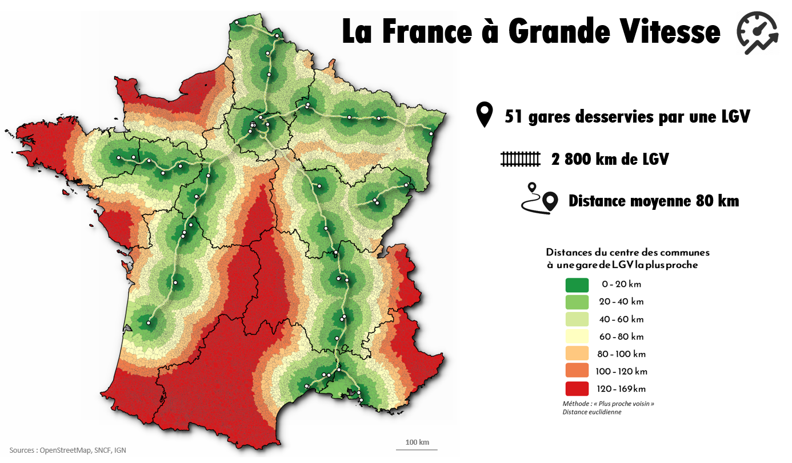

La France par les communes
L'objectif de cette série de cartes est de représenter des dynamiques, des distances, des logiques territoriales à l'échelle des communes française
Densité de population par communes (population légale 2017)
Evolution de la population par commune entre 2006 et 2016
Superficie par habitant et par commune
Médiane du niveau de vie par commune en 2016
Le prix de l'immobilier par commune en France en 2019
Prix des loyers par commune

Nombre de permis de construire (logement) par commune
 " alt="" style="width: 1070px;height:800px;" />
" alt="" style="width: 1070px;height:800px;" />
Distances des communes au magasin IKEA le plus proche
Distances des communes à la gare de voyageurs la plus proche
Distances des communes à la gare TGV la plus proche
Distances des communes à la gare LGV la plus proche

Distances des communes au MacDonald's le plus proche
Distance des communes au site de production nucléaire le plus proche
Distances des communes aux villes de plus de 100.000 habitants
Distances des communes aux capitales régionales

Distances des communes aux préfectures
Altitudes des centres des communes
Nombre de radars routiers par communes